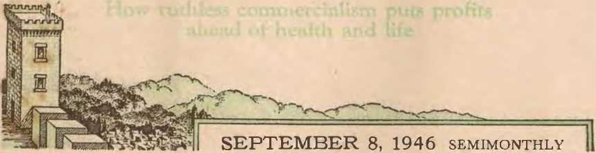
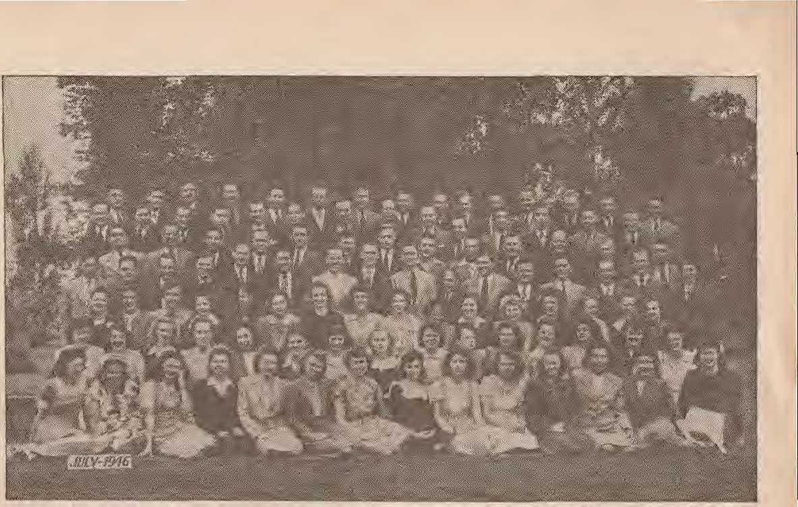

WAKF/
Atom Bombing at Bikini
The Music of Modern Times
Enemy Defeats by God's Spirit
Bromides Are Killers
THE MISSION OF THIS JOURNAL
News sources thatt are able to keep you awake to the vital issues of our times must he unfettered by censorship and selfish interests. "Awake!" has no fetters. It recognizes facts, faces facts, is free to publish facts. It is not bound by political ambitions or obligations; it is unhampered by advertisers whose toes must not be tread upon; it is unprejudiced by traditional creeds. This journal keeps itself free thatt it may speak freely to you. But it does not abuse its freedom. It maintains integrity to truth.
"Awake!'' uses the regular news channels, but is not dependent on them. Its own correspondents are on all continents, in scores of nations. From the four corners of the earth their uncensored, on-the-scenes reports come to you through these columns. This journal's viewpoint is not narrow, but is international. It is read in many nations, in many languages, by persons • of all ages. Through its pages many fields of knowledge pass in review—government, commerce, religion, history, science, social conditions, natural wonders—why, its coverage is as broad as the earth and a.s hiQh as the heavens.
"Awake!’’ pledges itself to righteous principles, to exposing hidden foes and subtle dangers., to championing freedom for all, to comforting mourners and sirengithermg those disheartened by the failures of a delinquent world, rendering sure hope for the establishment of a. righteous New World.
Get acquainted with "Awake!" Keep awake by reading "Awake!"
--<^^^^ll.c'^t.^^U
PUBLISHED BY THE Bt WATCHTOWER BIBLE ^AND TR.ACT SOCIETY, INC.
11? Adams Street
N. H. Kl\On.&, Pres!tfent
Five cents a copy
NOTfcI!: TO
Remittances: Please remit by mail JJ<ile or to this address or by money order or through the bank drari When :f. or currency is lost inn tf! ordinary mail there it no credit to Remittances from f^rn countries abroad the society will no branch of it, such as in Brooklyn, N. Y. but oriJrby internaUnnal po^Jrno!? ;der. ^* help of of a new or renewed subscription will be aelmowledged only when requested.
Brooklyn 1, N. Y. U.S. A. W, E. Van AIIIIURoiJ, Secretary
One dollar a year !:!11lSCRllli:1RS
NOt!,. of upiratfon: A substantial notice is sent with the journal two weeks before the subscription expires :::,: (r;:ptu;.
Change of address: af addun: Please send any change or renewal direct to us r^lher thatn to the post offlrc. Your should reach us at least
three weeks before date It is '-'' take t!l'eet. Send }'1lur old 0$ wol.l as the ll1:w
Entered .. Second class, matter at Brooklyn, N.Y., Act of Congress, March 3, 1879. Printed in U. S. A.
--^^^--^^^::^^^--^^^---
CONTENTS
Africans in a World Upside Down
The Wutcbtowej' School's Seventh Closs
Mysterious Movements of the Eel
Did the .Aicients Usc Electricity 1
Martin Luther on the Soul Question 24 "Thy Word is Truth"
©/“Now it is high time to awake.’—Romans 13:11
VMut-n# XXVj: Brooklyn, N. V., September 8, 1M6 Number 703
" OMBS AWAY!" Those were the words thatt were broadcast to the world a few seconds after 9 a.ni. on Julv l. Tho::;e were the words uttered from. a B-20 bomber flying some 30,000 feet above the peaceful Bikini atoll located in the Pacific. Far below 42,000 people Jiad assembled to witness the explosion of the fourth atomic bomb as it "burst among 73 naval vessels. "The greatest single experiment in nU history," It wasas called. No other event, natural or man-made, has ever been so extensively measured, gauged, photographed and reported. No other event evor had such a ljuild-up by radio and press. It wasas a great show and the whole world was the audience.
Shortly after Japan was defeated the idea of testing the power of the atom bomb on warships was conceived. Elaborate preparations were made during the months thatt followed. By January of this year It wasas announced thatt the Bildni atoll was the stage for this joint army and navy display known as ''Operation Crossroads’’.
Congressional approval was obtained and May 15 was set as the date of the first test in whieh an atomic bomb would be exploded in the air over various types of warships. President Trti-man later put the first test off until .T uly L The second test was to be a shaJlow-water explosion, 18 to 30 feet under the surface. Sometime in 1947 a third test will be held with a deep-sea explosion. Tentatively, the date for this third test, named “Charlie Day"7 is set for March 1, 1947.
The "guinea pjg" fleet itself consisted of 7:3 ships totaling 335,000 tons. There were battleships, aircraft carriers, cruisers, destroyers, submarines and transports; also German and Japanese ships. These were set out within a circle of 4,000 yards radius. In the middle was the 30-year-old bettleship, Nevada, ancli painted an international orange color, it made a fine bull's-eye for the target. In addition to these sacrificial ships were over 100 others used for operational purposes. More thatn 130 airplanes, including helicopters, were also used.
Amy equipment such as tanks, ammunition and poison gas was placed on board the ships. Also quartermaster supplies, like canned food, soft drinks, beer, candy bars and clothing were on deck. Cereal seeds, vegetables, Howers and cotton specimens were also included. Insects thati carry yellow fever, spotted fever and dengue were not overlooked. Yes, even hcdhugs were there! Additionnlly tlwre were th ousands of rats nn<l nti(e, and hundreds of goats and pigs distributed on tile vessels as a grisly reminder thatt they were to die instead of men. 1n the waters of the lagoon itself some 400 different kinds of fish were intlucled in the observations.
By J nne 24 all the preliminary arrangements were set and a full-dress rehearsal was held, using a dimiiiiy bomb. The indications were thatt this was to he a $pectncular show, and so every publici ty agency was brought into play. A special ship, the Appalachian, was rigged up with a maze of intercommunication equipment. .More thatn 200 journalists and newspapermen were aboard. Representatives from the eleven member nations of the UN security counsel were invited. Space was reserved for 60 members of Congress. All together there were about 6,000 observers thatt were given special polaroid goggles so thatt they could actually look at the blast. And there were radio commentators too. Their job was to feed the four major networks of America as well as the foreign stations . AH together over 1,000 stations devoted 48 minutes of their time, at a cost of $200,000.
"Able Day," the name given July 1, arrived. At dawn the special B-29 called "Dave's Dream" raced down the runway on Kwajalein island and suecessfullv raised its lethatl lond into the air. Meanwhile, at Bikini, the men thatt had been keeping up the pressure in the boilers of the target ships were removed, but not before the last man on each ship had hoisted a special red and yellow flag indicating thatt none was left on board. The failure of any ship to show the special flag would have caused the test to come to a standstill. Outside the lagoon were 42,000 anxious men, watching and waiting. Admiral Blandy's sh ip, the Mount McKinley, wns 10 to 15 miles away. It wasas the closest. Beyond, in the
18-to-20-mile zone, were the reporters and visitors.
As the listening world waited intently they could bear in the background the ticking of a metronome thatt had been placed before a microphone on the deck of the Nevada. Louder thatn the metronome was the cracking and static and off-stage voices intermingled with the shoutings of nervous radio commentators.
The climax bad been reached. Dave's Dream had made two runs over the target to check its radar equipment and get its range. Now It wasas swinging into the third or live run.
Eyewitness Accounts
On board the Appalachian miles away some watched the blaHt on the television screen. Others on deck looked through colored glasses as the violence of the atom was released on veteran battleships. For the majority, the show was a disappointment, since many of them had expected to get a thrill similar to thatt received if standing on the deck of a battleship when it fires a 16-ineh broadside in a hurricane. But nothing like thatt occurred. First, there was a flash, said by some to be disappointingly faint. Then, a few minutes later the sound like distant rolling thunder. Many :cientists, Congressmen and UN observers expressed their actual feelings and impressions from what they saw and heard, while others were carried away witl; their imagination and told the story as tf they were actually standing on the deck of the Nevada.
One observer said thatt It wasas iio more spectacular thatn the colorful cloud thatt accompanies a forest fre in British Columbia. The RusRian representative, pointing at the elond, said: ••Not so much." A senator first looked at the sun through his colored glas::;es and then at the blast and said: "My estimation of the flash is thati It wasas not as large or as bright as the sun."
In contrast with these statements are the reports of newspapermen like William L. Lawrence, of the New York Times, who wrote:
It wasas an awesome, spine-chilling spectacle, a boiling, angry, super-volcano struggling toward the sky, belching enormous masses of iridescent flames and smoke and giant rings of a rainhow, at times giving the appearance of a monster tugghig at the earth in an effort to lift, it and hurl it into space.
The spectacular cloud, made up of billowv, creamy-white clouds streaked with pastel eolors of pnk and saffron and salmon, towered five miles into the stratosphere. At a height of two miles it swelled into a great knot; at three miles there was another knob; and at the top it spread out like a great mushroom or cauliflower head estimated to have been 12,000 feet in dliameter. Meteorologies explained thatt the pecuhar cap was due to the steam cloucVs suddenly freezing at 18,000 feet into ice crystal. First reports were thatt the cimid rose to 50,000 m^ 60,000 feet. Later, these figures were pared down to 24,000 to 35,000 feet.
The high-speed earn eras (there were sixty of tlicm installed on steel towers five and ten miles from the explosion} gave a more accurate picture of what actually happened in thatt split-second when atom particles started splattering the lagoon of Biki ni. These cameras were operated by radio and some of them took 8,000 pictures per second with about onemillionth of a Recond exposure for each. These pictures showed thatt at first streamers of bright light shot out from the center. Then, an instant later, a huge ball of fire, more thatn n mile wide, seared and blaekencd the ships. A moment later this was replaced by a fog bank of steam, caused when water is suddenly heaterl ahowe 3,100 degrees Fahrenheit. Tn the center an atomic tornado of extreme violence was generated which surged upward thousands of feet.
This caused the wind to rush in at a speed of 500 to l ,000 miles an hour.
In the extremely ::;hort time thatt it took the bomb to explode, one-tenth of a millionth of a second, radiant energy was released thatt ltad at the <'enter an estimated temperature of 100,000,000 degrees Fahrenheit, ten thousand times hotter thatn the surface of the S\n. In the first 5000th of the frst second some of this data was recorded. Also spectrographic measurements were captured. A short time later pilotless drone boats and planes were steered into the target area to take samples of the radioactive water and air. Thousands of pressure, velocity and temperature gaitges were used to record the effects or the blast. Geiger counters wen,. installed in all the planes and hoats to measure the radioactivity, Individual '‘secur'd y badges" told i{ tlje personnel had once subjected to overdoses of the deadly rays.
Some of the Damage Done
The blast slapped the water with such force thatt it momentarily depressed it like a saucer. Great damage was done, though not of such magnitude as predicted. Five ships were sunk; nine were heavily damaged; forty-five others suffered badly. The hlnst "damaged more ships thatn have ever before been damaged by a single explosion", said the official report. Blandy ::;aid, though, thatt one should not he too hasty in drawing conclusions from these meager facts.
Because few ships were sunk outright and the palm trees and Rteel towers on Bikini islancl three and a Italf miles away withstood tlie blaRt, many people were prone to pass it off as a miserable failure. Granted tltat the bomb was not as great as the one dropped on Nagasaki, which was rated ns 15,000 times thatt of a 500-pound bomb, yet one thing is certain, and thatt is, the atom bomb is still the most monstrous and polf'nt weapon of destruction so far exhibited.
In time of war the ships would have been crippled to the point of uselessness by losing their radar, radio and fire equipment. Yet more damaging thatn fire and blast pressure were the invisible rays of radioactive substance, consisting of gamma rays and particles of neutrons, electrons and alpha particles. This form of radiation is equivalent to thatt of thousands of tons of radium. Bomb-burst radiation, milligram radium, is extremely fierce and lasts but a millionth of a second. but death may follow weeks later. Though at 18 miles distance on the Appalachian this radiation amounted only to thatt of one-twentieth of a second exposure under ordinary X-ray, which is harmless to hmnans, yet jf those creatures of flesh and blood who were disappointed at the show had been on board the ships in the target area there would have been a heavy loss of life. Many would have died from the blast within 3,000 yards of the center, and within 1,000 yards few would have survived.
Lingering radioactivity in the area was somewhat proportional to the distance from the burst. Forty-eight hours after the blast the beach of Bikini was safe for sunbathers. But some ships closer to the blast were still dangerous on July 4.
First reports said thatt the bomb was dropped with very good accuracy and thatt ''it could not have been hettet'". But later It wasas shown thatt the bomb fell 1,500 to 2,000 feet west of the target ship and to its stern. This explains why the transport Gilliam was sunk '‘in a matter of seconds"', whereas the Nevada escaped. Though Bl8Jidy said thatt the bomb exploded ••at exactly the intended height”, others claimed thatt H did not go off at the intended height. It wasas supposed to have been the same type as thatt used at Nagasaki, thatt is, a Plutonium bomb instead of a Uranium 235 type as used at Hiroshima, yet It wasas "somewhat less powerful” thatn the Nagasaki bomb. The fact that the cloud did not rise to 60,000 feet was proof of thatt. Nevertlie-less, It wasas terrible enough in its destructive force to set the Saratoga afire two miles away.
No tidal wave was created, and the earth was not shaken as predicted. Magnetic and radioactive gauges stationed in such scattered places as Hudson Bay in Canada, Peru and Australia failed to respond, and tidal gauges and seismographs in California and Hawaii were not disturbed. This was because an atomic bomb is only oiie-thousandth as powerful as a moderate earthquake.
What About the Animals?
Only about ten pencent of the goats and pigs were killed outright. So the first corielusions were thatt radioactivity was not as bad as predicted. The second day goats were found munching hay on the forecastle deck of tlte hard-hit Pennsylvania. But mice under the gun turrets on the stern of the Nevada a few hundred feet from the center of the blast were all dead. This led Colonel Wan-en to the belief thatt ships cannot he built thick enough to protect their crews from the lethatl radiation of nearmiss atomic blasts. It wasas also learned thatt white mice flown through the cloud in drone planes after the blast turned brown. Reports showed thatt many of those found alive were sick and later died. Some of the animals were given a special hath to remove the radiation, hut two weeks after Able Dav it \vas reported from the animal sJilp, Burleson, thatt the survivals of the atomic blast were "dying like flies". Blandy later denied this as an overstatement, and said mortality was at the ''expected rate".
The Second Test at Bikini
Precisely at 8:35 a.m., July 25, called "Baker Day'', tlie first underwater atomic bomb exploded beneath a fleet of 87 naval vessels of varions types. Thon-sands of mile s away the listening world heard by radio w!iat sounded like the continual roar of a pouncling surf, or more accurately descrihed as the amplified sound of escaping excess steam from a ship.
Once again a great ball of fire lighted the lagoon. Then thousands of tons of water gushed up skyward out of the bowels of the lagoon to n height of 5,000 feet. Intermingled with this water was a gray-blue cloud of radioactive mist and steam. It was peach-colored on the edges and continued to rise to an altitude of two miles. hut was higger at the base thatji former atomic explosions, resembling a gigantic, shimmering mushroom. Estimated to have a diameter at the base of 2.000 feet, it fogged out and obscured the television screens.
The wvawes thatt this explosion raised on the lagoon were said to he all the way from 2 to 10 feet high. Mere ripp les they were compared with the predicted 100-foot waves. nevertheless, this explosion was no firecracker affair. Tt tossed giant battle-wagons around as if they were toys, and caused considerable damage. One obBf'rver said thatt the atom bomb No. 5 was equal to 50,000 tons of rNT.
The next day early reports indicated ten slrips had been sunk, including a battleship and an aircraft carrier, while six others were badly damaged. No ship survived within a radius of a half a mile of the explosion. Double proof has thus been given to show that the atomic bomb is a deadly weapon of destruction to both life and ships. whether it is exploded above or below the surface of the sea.
Why These Tests?
These atom-bomb tests were not sponsored by the UN organization, but were an undertaking by the United States only. The pnrpose, Mcording to Admiral Blandy, was primarly to determine the effects of the atomic bomb npon naval vessels to gain information of value to the national defense . . . Secondary purposes are to afford training for Army Air forces personnel n attack with the atomic bomb against ships and to determine the effect o£ the atomic bomb upon mJlitary installations and equipment.
It was "to improve the defensive features of combatant ships"', it was "clearly as a defensive measure”, said the brass-buttoned admirals. Afore is revealed by these sta.tements than appears on the surface.
To say that the tests were "scientific experiments”, as $ome 8aid they were, Is not altogether true. Th<' scientists that gave the world the atom bomb did not approve of these tests, and said that nothing new was to be learned from such. The thousand scientists that took part in the test, it is said, did so "with heavy hearts and without enthusiasm". The Federal American Scieuti;ts said that "nothing of scien tific value and lit-tl? of technical value to peacetime use of atomic energy'’ would be learned from the tests. The f'cientistR were not enthusiastic about these purely "defensive" tests.
The Joint Chiefs' Evaluation Board erred when it said that these tests were to enable "the UUnited States to retain its present position of scientific leadership''. Military leadership is what many believe they meant. Huge amounts of quartermaster supplies were placed on decks of yessels Just to "see what happens''. Noth-mg was learned ahout the effect radiation had on the great stores of valuable material that was destroyed by fire or went down with the sunk ships. Far more scientific control, and heiice more valuable information, could have been obtained by subjecting those materials to radiation in the laboratory, and at a fraction of the cost.
And speaking of expense, the navy said that the experiment would cost onlv about $100,000,000. But others placed the cost more nearly where it belonged, around a hall billion dollars. It depends 011 the bookkeeping system used. According to the navy the ships were junk.
Political Repercussions
The mvaluation Board said that "the test was well conceived and executed". And secretary of the navy, Forrestal denied that it was a threat of war to the other nations. However, others doubt the sincerity of these statements. In fact, an atomic bomb test at a time when peace conferences are in order touched off a nmnber of repercussions in different parts of the earth. Many observers see in it a theatrical exhibition before the world of the military strength of the .United States. They see in it, too, a political move on the chessboard of international diplomacy.
The French press poked fun at the great publicity that was given this event. If it was a purely military experiment, why aU the publicity! ls it customary for the iiavv to invite hundreds of newspaper reporters and radio announceTs and representatives of foreign governments to witness military experiments at its proving grounds? Not at all. A French scientist said: "The ^American atomic bomb test in the Pacific is a miserable idea and a poor example to give the world."
The Italian Socialists paper said: «The atomic bomb is on a level with the evil deeds of the Nazis and places conquerors and vanquished 011 the same plane." .Another Italian newspaper said that the test was the "most startling, monstrous and at the same tinme tragically grotesque experiment".
One British comment about the test comes from a member of Parliament. He was loudly cheered when he rose in the House of Conmmons and said: "Wbv choose innocent animals when there are so many guilty men available?"
Russian comment on the Bikini tests jg worthy of: note. ‘'(An aggressive gesture against all people of the world," said a Soviet newspnj)er. Another Russian writer commented about the fact that atomic energy for peaceful purposes is subordinated to military use.
Another commented on the fact thatt although the bomb failed to sink all the warships, it, nevertheJess, "fundamentally undermined the belief in the seriousness of American talk about atomic disarmament". It is a means of "black-mail that can be be used against those wlio do not agree with, or submit to" the United States, is the foreign impression made. Even Russian scientists showed "profound anxiety at the fact" that atomic energy was being used by the United States, <<not foi’ the good of manland but to its detriment as an instrument for oppressing and enslaving other peoples.’'
Not only abroad, but here at home, many people were and are opposed to such "experiments". Senator Huffman is quoted as saying that "the United States cannot escape the accusation that it is acting in a most unsuitable and hypocritical manner". Scientists too have opposed holding such sword-rattling demonstrations at a time when there is supposed to be a peace in the making.
America stands at a gTeat vantage point in history because of her heritage, resources and skill, but she does not use these to inspire confidence in her ability to establish peace. .Mlaybe the explanation for this deplorable condition is given by Dean Gildersleeve. She said, not so long ago , ’’We have been [ailing because our leaders and representatives have lacked brains that see the goal and think straight. They have lacked wisdom, and they have lacked courage.”
Notwilhstanding this unfavorable comment following the first test on July 1, preparations with dress rehearsals went on apace for the next one held on .July 25. The admirals try to justify these •’experiments" by saying that the data gathered will prevent another 'Tearl Harbor". But as far as developing a defense against the atomic bomb Dr. J. Hobert Oppenheimer, director of the atomic bomb laboratory at Los Alamos during the war, says: “There are no specific counter-measures for atomic liombs."
AWA{E/
It is for this reason that men like Oppenheimer and Trey who developed the bomb now tear it more than anything else. They see in these bomb tests the gathering of data for use by the militarists, and not for peaceful scientific use. The scientists say they labored under an illusion in developing the bomb in the first place. As one of them put it; ''VVe thought the democracies would use it wisely to end the war to end all wars." But uo’v they see that the atom bomb of the futune will not have the killing power of 20,000 tons of TNT, as the one used at Hiroshima, but rather, an atomic bomb of the future will he equal to one or two million tons of TNT. Furthermore, these bombs will be relativelv cheap when compared with other types of weapons. One estimate is tliat in the not-too-distant future an atom bomb will cost no more than $1,000,000. More than two billion was spent developing the first one.
Those who see beneath the surface and iltink in tetins of the third dimension find no peace of niliid or consolation in the fact that these atomic tests are promoted by the militarists. Those who hope and pray for peace find no guarantee that such military leaders will establish a lasting peace through their bomb research. No, not when tliey read concerning the war-crime.s trials in Japan that it was the militarists tliat set the stage and promoted the China incident that eventually embroiled half the world's population in a long and bloody conflict.
Originally scientists were experimenting with atomic energy with the view in mind of using it for the benefit of man, but tliejr efforts were diverted into destructive channels. Instead of spending hundreds of millions of dollars on a bomb test, why not spend a little in developing the peaceful possibilities of atomic energy? "V1ty not use it to cure skin cancer on a large scale? There are also many other applications for atomic energy that are now known. Up to the time of the war over 400 radioactive isotopes had been discovered. Why not develop their possibilities?
It is true. a few days hefore the first Bikini bomb was released the government finally made available a small quantity of atomic by-products for medical purposes. _But in doing so they said : "It probably will be impossible to meet all of the demands of the country until additional pile facilities are built specifically for radioactive isotope production."
All right, why not spend some of the money that was sunk in the Bikini lagoon in building such piles? No! say the militarists, such "is not contemplated in the irmnediate future". Instead, they say that millions will now be spent in redesigning and improving naval vessels for the future.
Instead of perverting this valuable source of energy, as bas been done in the mid-Pacific, why not use it for legitimate purposes? Why not, for example, heat a great city like New York next winter by atomic energy? It is claimed that the harnessing of the atom for the generation of power is already in the blueprint stage. Why, then, does the government not give such experimental work its full support and financial aid instead of giving it to some fish-killing, mouse-destroying, nation-frightening show of military might f
Does it not seem inconsistent for a nation to spend hundreds of millions of dollars on these admittedly military preparations for a third world war, and at the same time send its delegates to what is called a “United Nations" peace conference f .And yet this is what is done, and both events are reported in the same newspuper. The United States finds herself in this ridiculous position because in reality slie does not have faith and confidence in the UN organi-zati.oji. She believes what Trygve Lie says: ''The immediate job of the United Nations is to forestall actual war between nations." In other words, it is admitted that s\ich factional organization can only delay war. If the United States7 without faith in the UN organization, busies herself perfecting machinery for the next war, how can she inspire other nations to have faith that the ('United Nations" will outlaw war?
Great fear has seized the rulers and the ruled. Tliey admit the atomic bomb offers no guarantee against war, with the exception of the Vatican, which says that the atom bomb is more important as an instrument of peace than as an instrument of war. Imagine! Neither does the announcement that a method is being worked on for detecting an experimental atomic bomb explosion anywhere in the world give any comfort or peace of mind. It is a case of "'men's hearts failing tliem for fear, and for looking after those things which are coming on the earth".—Luke 21: 26.
- ■
And so, driven by this fear, the nations prepare for war. Even while the preparations were going forward for the Bikini tests announcement was made that the United States ltad developed other terrible weapons besides the atomic bomb. Fear, too, was increased when it was disclosed that the Russians tried out an atomic bomb on December 18, 1945, that made obsolete the .American type. F’rom now on it is a race between these so-called “brotherly" nations whose foreign ministers sit around the peace tables while their scientists build bigger and better bombs.
If an atomic explosion is the greatest manifestation of power that man can produce, and yet it is only one-thousandth as powerful as a moderate earthquake, tlien the nations that have forgotten God should surely tremble and fear, for shortly now Jehovah God, the Almighty and Infinite One, will shake this earth with such destnwtive violence that the atomic bomb tests of Bikini will pale into insignificance.
Fixing Boundaries
THE sovereignty of a nation, as history shoW!, is no ruore secure than its borders.
If its territorial boundaries are called in question a nation, to show its right, must display its might. "ifigbt makes right/' so they say, in this world of brutal force. }'or example: Wm. Philip Simms, editorial commeutator of the New York World-Telegram once wrote :
^Tbere is scarcely a frontier in Europe, it is pointed out, tliat has not changed hands half a dozen times n past centuries. Scotland could clam England or England elnim Scotland, or Britain claim F:rauce or France claim Britain, or Rome claim, everything, if you delve back far enough. Or Mexico might take back Texas, or Russia take Alnskn, or France take LouisiAna, or Spain take Florida, or the Indians tnke- had Manbattan on the grounds that we hnd taken advantage of them when they were weak."
All the talk about satisfactorily securing the territorial hoonclariea of a so-called "brotherhood of nations'' is sm to fail. J?or of a truth, "the eaulh is Jtobovah's, and the fulness thereof" and present govemments have no legal claim thereto. (Psalm 24: 1, Am. Stim. Ver.) Consequently, tenitoties of stat.cs lind boundaries of nations will continue to clliiuge hands in the open market of international barter, the medium of exchange being cliplomatic intrigue with force, antil He who is the rightful Owner of the eadb rises up at ^Armageddon and squashes all these "squatter" nations who presumptuously and arrogantly druw imaginary boundary lines on the errth'a surface.
10
AWAKE I
On the Religious Front
• The heads of ull so-culled "Chnstinn"
churches in Britain issued a call on July 28,
1946, for prayers on behalf of the peace con- J ference at Paris, starting July 29. A statement Is signed by the archbishop of Canterbury, the Roman Catholic bishop of Wcstmnster, (L the moderator of the General Assembly of the Jj Chureh of Scotland and the moderator .of the Free Church Fedetal council said: lj
"The coming peace conference will mark a another and important step in the long process 1 of makiug the peace. The constant duty of j?
Christian people is to he steadfast in prayer S for the p110ples of the world and for those who bear the responsibility of leadership among them. That duty is indeed recognzed; yet, having in view the critical importaoce of the com- y
ing conference anti of all to which it wilU lead
on, we call upon al who put their trust n the
will and grace of God io be instant in prayer
The following comment is immaterial to such Jj political religionists, but it will gaw the ear of ij, those sincerely trying to be Christians, because jj their Leader, Christ Jesus, said it: "I pray not n_ for the world."—John 17: 9. )■
Catholic Priests War Criminals Ji
• The Yugoslav Ministry of Jnforruo.tion in (f Belgrade on .July 26, 1946, said some priests had been executed in Yugoslavia since Tito y took power, hut "they were tried as war criminals, not as priests". A spokesjunn at the min- i istry said reports that Tito had launched n y terroristic nnti-Cathulie policy were "olfl acen- s* sations renewed to coincide with the Paris peace conference''. Religious rabble-rousers in J) democratic lands should remember, before they (L unleash their windstorms, that the .Allies thew- J selves are holding the Roman Cuthoic priest (L Tiso of Czechosluvakiai Cntholic Hitler's pup- J pet ruler, for trial n the war ciimina.l dock. 0
Double or Nothing
• The following appeared in the New York World-Telegram r on May 25, 1946: “Brussels, May 25.—A Belgian priest named Callewaert appealed from a stmtence of six years' imprisonment imposed after his conviction for collaboration. The court of appeals today made it 12 years." Had the court read in the Bible God's , judgment against snch religious organizations as tills priest serves, nirnely, ''Double unto her double" Y—Reve!ation 18: 51 6.
Consolidating Religion
€ In a document of some 4,000 words, a basis for union of the Protestant Episcopal and the Presbyterian, U.S.A., churches bas been officially submitted by a joint committee of the two bodies. 'fhe preamble to the proposed union reads as follows :
"Through the events of our time as well as through his revelatinu of his will iD Jesus Christ, God il imperatively calling npon all who believe in him to become one Hock under one Shepherd, so that the world muy believe in its Creator, Redeemer and Sanctifier. .Al the churches stand at the bar of God's judgment. The imity of Christians is not merely a pious aspiration; ii is essential if the church is to live and to fulfill is mission both at home and abroad. It is not remote from the needs of onr age. Upon us the end of a.world has come, and the events of the lust decades have shown that unless the church becomes increas-ngly efectve in human affairs as a united comnnmity of faith whicli transcends nationality, race and class, and thezofore etm hold divided groups in co-operation, further and more destructive ideological wars are nevita-ble."
Tba document shows that, finally, some religions have recognized that the end of the world is at bnnd. Their efforts to hold it together wil surely fail, according to the Bible.
"Associate .yourselves, 0 ye people, amd ye shall be broken m pieces; . • • Take counsel together, and it shall come to nought.: speak the •word, and it shall not stand: • • • Bay ye not, A confederacy."—Isaiah 8:9-12.
An analysis of the musical merits of the "popular song", ragtime and jazz, plm a few observations on the vanity that often attends serious music
THE primary purpose of music is to bring praise to Jehovah God, as the Bible so abundantly testifies, and its secondary purpose is to delight and benefit man. It may wen be termed the language of the heart, the speech of our emotions. When filled with superlative joy, intense longing or keen grief, words seem inadequate, and the soul breaks forth into song, in music. A case in point is the Psalms, which were originally sung, and which run the whole gamut of human emotion.
Not only is music the expression of the heart, Jut also food and even medicine for it. Man has a hunger for beautiful sounds just as he Ju1-s a hunger and thirst for food and drink, for heauty that is visual, and foi’ truth and knowledge. Music satisfies that hunger for beauty in sound. And music has been found to be good medicine for troubled spirits from tile time physicians prescribed it for King Saul down to our day. Edison, some thirty years ago, made many experiments demonstrating the value of music in changing one's moods. It has been found that when sorrow depresses the heart, or bitterness, anger or resentment arises in the breast, the hearing of beautiful and cheerful music will help restore peace and calm. Because of this. good music is an aid to the Christian who seeks to have eontrol of his mental disposition and to have his mind and heart filled with such things as are pure, honest and of good report. Such is particularly true of music written in praise of Jehovah God and about the joys of His service. But there are many different types of music, and not all have a good effect.
The "Popular Song
About a hundred years ago in this country such men as Stephen Foster wrote songs that appealed to the multitude and which became very popular. Such were really folk songs, and are still popular today because they Jiad both sincerity of thought and musical merit. However, about the same time, and more and more so as the years rolled by, another song was being composed, the •'popular song''. Its authors and composers were not men who .felt the mge to give their fellows something beautiful and had the gift to do soi but were such as had but one concern, that of making money; and this they would do by catching the popular fancy with some-' thing seemingly new. For years they sentimentalized over the sorrows caused by the unfaithful lover, the drunkard father. the 'dead mother in the baggage car ahead', etc. Excessive weeping over the woes and wrongs of others brought a certain amount of emotional relief; the people enjoyed it, and so it was worked to the limit by these tune smiths.
When the country went to war the peddlers of this type of entertainment found it profitable to become patriotic, and so patriotism became the last refuge also of musical ( 1) scoundrels. When prohibition came along they sang of the «alcoholic blues'' because someone had stolen their booze. Since then the popular songs have continued to deteriorate, until today they have reached an alltime low. the popular song is puerile, childish: "Shoofly Pie/' "One-zy, Two-zy, I kiss You-zy; Two-zy, Three-zy, You kiss Me-y" ad infinitum, ad nauseam. It is vulgar: “I'm nobody's mama now; Sunken hips and frizzled lips"; it is blasphemous in its references to God and the Scriptures; it is filled with creature worship, idolizing "heroes" and romance; and when it is not brazen in its appeal to the desires of the flesh, it does so by . means of the "double entendre", using seemingly innocent words to convey evl thoughts. It is told of a leading young lady in a Broadway musical, who had recently come to the "Great White Wav'' frorn Texas, that she actually cried when told the significance of the words she was singing. But slie evidently soon got over her grief, as she kept on singing the words. The popular song reflects the mind of this world, a world under the control of the Devil and plunging liead-Jong toward destruction.
Nor should it be thought strange that this is so. Today tJe writing of popular songs is a highly commercialized business, Big Business. Ability is so scarce that we often -find three or more listed as "composers" of an inane melody, while a like number claim credit for tlje lyrics; the former being as ignorant of tlte grammar of music as the latter are of the possibilities of the English language. One on the "inside'' of tliat business opined that the reason that no hits were emanating from ‘Trn-pan alley" these days was that its composers never go hungry, they being well paid regardless of whether or not they produce!
Tin-pan alley. That place is well named as oue writer not so long ago observed: "Tin. the one metal that suits the dull reverberatiom; of the passing song. Pan, the one instrument to send out its flat repetitions, its tiny monotony. Alley, not eveu a street. It is a place of crassness of sentimentality and cynicism." No wonder they have to hire ''pluggers” and bribe artists to bring their wares before the public!
What is ragtime? and where did it originate? How the name got its start is anybody's guess? not much being known except that when playing music a certain way, they spoke of it as "ragging" it. One thing is certain, there was ragtime before it was called by that name. Ragtime i!:l generally acceded to be syncopation. And what is Syncopation 1 Well, it is a form of rhythm, and in music rhythm is the "regular recurrence of strong and light accents". Usually the stress falls on the first note of a bar of music, a secondary stress being given at the half-way murk, such as: One, and, Two, and; or One, two, Three, four. To get the effect of syncopation the stress is reversed, and we have: one, A-xn, two, And; or, one, Two, three, F'our. By means of tJjis novel use of rhythm, music has a spice, a piqnancy all of its owri. Composers of "good" or seiions music have kept this in mind mid therefore nse it very sparingly, it being found chiefly in musical noveltie-s. Many ' of l;he advocates of ragtime point to this fact to argue that there is nothing wrong with ragtime. But in ragtime we do not have just the nse of syncopation, hut its abuse; it is syncopation ridden to death, he come, as it were, a disease. In ragtime the rhythm is the all-important factor, melody, harmony and musical ideas being slighted for its sake. The overdoing of this novel form of rhythm has semething exciting about it, and its effect upon the listener is to make him reckless.
To appreciate the difference between the use of syncopation by composers of serious music and of Ragtime one might liken it to the nse of alcoJjolie beverages. At dinner there mas' he a little Burgundy wine on the table- to go with the steak. This may add to the enjoyment of tltH meal and also aid the digestion ; for is it not written: ''Wine maketli glad the liea.rt of man," and, "Take a little wine for thy stomach’s sake''? In moderation it serves a good purpose, and its actual volume as compared with the meal as a whole is very small. That compares to the use of syncopation in serious music.
It, tin-pan alley with its ragtime is comparable to the sa]oonkeeper who
keeps coaxing his customer on payday to have one glass after another of cheap whiskey, having an eye only on his own profits and not at all concerned about what happens to his customer's health and family. Or it may be likened to the reckless young set of today who imbibe a lot of liquor because it makes them feel "good", irresponsible, and arouses their amorous impulses.
This is easily appreciated when we remember that Ragtime (not just syncopation) "harkens back to darkest Africa and is derived from tribal open-air exuberance". It was the music of savages, who, having no appreciation of melody" not to say anything of harmony, knew music only as rhythm plus noise. It served to give expression to their primitive instincts as well as to arouse them, and was always associated with dances having either a religious (demonic) or sexual significance. In fact, in many of the pagan ceremonies the two go hand in hand, even as recorded in the Scriptures regarding Baal-peor.
Those savages were highly skilled in their rhythms, some of the rhythms being so complicated that the white man could not imitate them. When kidnaped and sold as slaves to the cotton growers of the "Old South”, they brought with them the beginnings of ragtime. Their skill in rhythm and sense of humor soon produced the Negro minstrel, that form of entertainment so widely imitated by the white man. It has been said that ragtime began with the Negro's restless feet, and that it is nothing more than a pepped-up version of the Negro spiritual. it has been said that in his spiritual be yearns after God but in ragtime he yearns after the Devil; his spiritual being for Sundays, bis ragtime for the other six days of the week
When ragtime first took the country by storm, a prominent musical educator gave it a withering blast of invective, stating that it was, among other things, •<the musical attitude toward life only
14
too familiar to us alL An attitude shallow, restless, av’id of excitement, incapable of sustained attention, skimming the surface of everything, finding nowhere satisfaction, realization and repose. It is a meaningless commotion without purpose, an epilepsy simulating controlled muscular action. It is the musical counterpart of the sterile cleverness we find in so nmch of our centemporary conversation:''
Viewed from a strictly musical standpoint, our critic of ragtime is correct, hut in other respects his definition falls short. It is not without meaning and purpose save in so far as it is without a good meaning and purpose. This is supported by the testimony of welfare ageJi-cies who claim that ragtrne and jazz have caused as inauy young people to go wrong as has liquor. Yes, ragtime is of, by, and for those who are bored and discontented, of whose lives it eau be said, "All is vanity." But the music-makers must not be made to bear full responsibility for ragtine. Remember that music is the gpeech of the emotions, and if this old world's bosom is filled with sentimentality and restlessness, the musicians merely express it.
Jazz and Its Vmriations
"What is jazz 7 Is it an art, a disease, a manner, or a dance? Has it any musical value? After twelve yeai’s of playing jazz, I don't lmow.'' Bo, at one time, spoke the so-called "king of jazz". Some insist that jazz is not music, but merely a form or manner or metlioil of playing music. riiere seems to be considerable argument in favor of this view, as any piece of music can he “jazzed up".
Jazz being the natural development of ragtime, it is not surprising to find that it too got its Rtart with the African Negro transplanted to this country. While both New Orleans. La., and Memphis, Tenn., aTe mentioned as the birthplace of jazz, it seems that the latter has the better claim to this distinction.
A WAKE!
History lias it that a political candidate used a band of Negro minstrels in his campaigning, whose reckless and noisy playing and emphasis on rhythm so struck the popular fancy that their can* clidato was elected.
As a rule, these colored musicians who pioneered in jazz coulcI nut read a note, hut played entirely by ear. Being naturally gifted improvisors (ana that such is a gift cannot he denied) they could not resh;t the temptation to fly off on a musical rampage. Theirs was an outpouring, savage and exulting, noisy and unashamed, and was just what a world with the jitters, such as was the case in days of World War I and shortly thereafter, wanted.
.Jazz may have first seen the light of day in Memphis, bnt its ‘blues” were, without a doubt, born in St. Louis. The hl'les are another ijistance of the abuse of a musical elfect, an<l were also originated by our colored minstrels. In music we have the major and minor keys, the distinguishing featnue of the miuor being primarily the "flatted'' third and sixth notes of the scale which tends to give it a "minor'' or melancholy hue. In the blues the music is written in the major keys and is given a sad or wailing quality by repeatedly fiattiiig the major third, the strongest note in the scale. Thus we have a music that is neither minor nor major, but a mixture of both. The Negro's rn;e of this device can, doubtless. be laid to the fact tliat his 'lot was not a happy one'. However, he had his sense of Immor always with him, and in his blues we find both present. The popularity of the bluest no doubt, is due to the fact that the modern American likewise finds in it the expression ior his discontent and longing.
As time went on jazz hecame mor e and Diore a science, shoJI we call it, for the public was ever wanting something new. Jihis is particularly shown in its use of color and rhythm. In jazz, rhytlun also gets the lion’s share of attention; and, SEPTEMBER 8, 194U while it is generally associated with rag* time, it has reacbed the point of development where it is possible to have jazz without the nse, or rather the abuse, of syncopation. How so? By the clever means of clashing t\vo definitely and regularly marred rhythms with each other. There is no limit to the possibilities of novelty and excitement by such interplay of contrasting rhythms, in comparison with which ragtime seems rather tmne.
True, composers of serious music also make use of this effect, as wlien a melody in waltz time is played with an accompaniment in common time, 3/4 nnd 4/4 time Leing played simultaneously. But here again tin-pan alley does un effect to death for the many who crave novelty and excitement. Such use of contrasting rhythms requires a great deal uf emphasis, and so we find that the rhythm section, with its banjos, bass fiddle (wbiclt is "slapped" instead of bowed), drums und the many traps, is the most important section in u jazz band. .
In their quest, for novelty and variety the jazzmen have not overlooked the possibilities of color, and most of their works abound in ''loud'' and clashing hues, although there are also some of a more subclued nature. In jazz the brasses reign supreme and undisputed, Jiving up to the colloquial meaning of their name. In the symphony orchestra the brasses are used very sparingly, particularly the trumpets and the trombones; and even in a baud, the brasses aTe employed as if' ever aware that there are s\ich instruments as the woodwinds (flutes, clarinets, etc.), which must also be heard. But in jazz lie brasses blare to their hearths; eontent, and for the sake of novelty mutes are used; producing an endless variety of effects, nasal, whining, etc., all in keeping with the jazz spirit.
However, the most distinctive instrument of jazz is the "moaning"' saxophone.
This instrument ltaH a color so different from that of other orchestra instruments that it ever calls attenlion to ih;eJf. It may he termed a brash and rugged in-dividnalist wlio refuses to nwrge hi::; personality with others for the sake of harmony; which explains wlty repeated efforts to include it in symphony orchestras have been unsuccessful. J3ecause of this, in most jazz bands they replace the strings and are harmonized to furnh:lt the background for the trumpets, which effect. can be and at times is pleasingly and skillfully used. As a solo instrument 1t also has some merits.
The quest fur variety in color bas brought forth "hot') and “sweet" jazz. Hot jazz is played by a raucns aggregation of instrumentalists and is the symbol of u world •with the jitters which says, 'Let ns eat, drink, and be jazzy, for tomorrow we die/ Some men drown their cares with drink; hot jazz helps others to do it with noise. On tho other hand, "sweet" jazz is subtle and languoj:ons, the language of sentimentality, of insinuation ami double meaning. "\¥hen the public got tired of one extreme, tin-pan alley turned to the opposite extreme, and today it gives out bot.li.
Recent variations of jazz are "swing'', ‘‘boogie woogie," "jive," the "jam session" of tlte “jitterbugs", etc. But regardless of the variation, they all fall into the same category of lawless expression so far as tlje rules of musical composition are concerned. As someone ltas well said, jazz is a ‘•tripartite agreement [of melody, barmoiiy and rhythm] to disagree, taking over in the one place [music] that was to he forever free from noh;e and confusion".
Concerning the spirit of jazz, none other than Paul 'Viiteman, the "king of jazz", wrote this indictment:
'•I thlnl{ it is- a mistake to call jazz cheerful. The optimism of Jazz is the optimism of the pessimist who says, 'Let us eat, drink and be merry, for tomorrow we die.' This cheerfulness of despair is deep in America . , . Behind the rush of achievement is a restlessness of dis-satif’action, a vague nostalgia and yeanling for something indefinable, beyond our grasp. . . . that is the tiling that is expressed by that wail, that longing, that pain, behind all the surface clamor and rhythm and energy of jazz . . . It is the expression of the soul of America."
But, is there nothing good about the popular song, ragtime and jazz? Have our jazzmen and tlieir associates produced nothing but chaff, filth and poison. It would hardly be fair to put it that sti'ong, yet, compared with the quantity that they produce, that which has itwrit is so smaJl as to be negligible. Occasional!y there is a rneJody, a musical work, a popular production that gives evidence of ti'ue beaut}*. Such a notable exception is Gershwin’s "Rhapsody in Blue". Another composer’ who may also be singled out is the late Jerome Kern. some of whose melodies have been likened to folk music.
In justice to all it must l)e admitted that there is much vanity associated with serious music. Not all serious and so-called "good music" iR of worth and merit, deserving to live. Those old boys, known as the "greai masters", tlu:-y also had to make a Jiving; and so they also Jtad to furnish musical compositions on demand, even tltougJt they were without new musical idea$ at the time. And if jazz is aRsociated with one form of religion that incites passion and liits wide of the mark of the purpose of music, se-rious music is verv much contaminated with another form of religion, creature worship, and lands wide of the mark in other resjiects. Most or its devotees bow at the shrines of ‘‘great’’ composers, “great" artists, both vocal and instrumental, and “great" conductors, give them reverence and speak of them with bated breath, at the same time affecting a WAKE ! a disdain for the "ignorant and unlearned'' multitude who do lint join tlwm hi their "worship”. And much of serious music is composed fur tile very purpose of eliciting such homage. Being written so as to exhibit t lie skill of tlw artist. Snell indicates a ww‘l'ul Itwk of under;tauding lint only of tilt: purpose of music, but also of the I'aet that no creature i::; to he singled, out for praise and elevation on a pedestal.
All of which hi’i 11g::; home 1 he fad that with music, us \rillt everything eb:e that affects man, u proper evaluation of it must be made. There are plenty of compositions that have Ute right kind of appeal, folk music, light classics, serious music (when not taken too seriously), and not to overlook the Kii2!](lom 8prricr‘ Song Book. The Christian is nnt craving excitement, he is not bored with life, he does not think that the height of living is "sdf-expression", lawlessness or selfish enjoyment; but he knows that the real joy and satisfaction comes from knowing Jehovah Hod, learning about Him, and in doing I:ljs will. There i:-; much joy, deligltt and satisfaction in suelt things, and if' we are hut wise enough to teed on them WE' shall find true contentment. And Ruch things carry with tltem the promise of nn eternity of hlp::H-ihigs in .Jehovah'::; riglt teous new world wltere mankind will e:mjor Teal music. wltile> the indulgence of the base stuff the:; world ltu:-; to oifer ends with death. Is it not true't Time will answer, Yes.
Africans in a World Upside Down
In a world where so much Hi upside down, due Tnar£'g warriors of the Sahara enter with n few more complications which are perhaps best described by stating, with I’escrYutiom;, that tht> UJeii air* thr women awl the wolli(!n ure the men. Elsewhere in tlm Arab world, uiul Lhese people are Bergers who arc uudt’r Arab domination, llw women, until recently, woru veils. while the men exposed the beauties of their own cotmtenamces to the lil'ht of day. Y<‘t among the Tuaregs the women wear no veils, but the men wear ••ithl'i' dark-blue ont>s or while ones, leaving vJsible only the eyes nml the tips of their noses; and this makes the nwu either "black" or "white" Tuaregs, tlwngh the art nnl euloi- ii< n ri‘ddi:<h yellow. 'l'llii tall, well-huilt women are famous for their lioauty ami their intelligence, mul because, iu various parts of the world. it 'l'l easier to tlel ermine who are the mothers tluiii t hw fathers, the Tuaregs trace their fumily descent in thu female lne; the community is run l>y the wouum and they own all the property except. the nwn\; clothes and weupons. Some more contrary things have come to light regarding African nwu anrl women. Emperor of Ethiopia, Haile Selassie, has decreed that nobody may convert u member of tlte Ethiujjiruj Church tu any other belief, except in certain open areas, such as Addis Ababa, where people iiiuy bclil'vo ns they wish. That sounds m; if Huile hud come ilown tu the lewl of (be Ronum Catholic Hierarrhy. The Hierarchy llops not want anybody to believe anything except wbat they Lell Ihem, this tn keep the stream of “purgatory bribery” intact. Haile's idea is to keep them in check so that they won't connive with snnw future Mussolini to gmb his country again nml ehnrchify it a Ia Vaticana. '
I11 Africa the wages of the natives n.te impossibly unfrur. In America, ut the outbreak of the wui’ unskilled lulwr, colored, was receiving twelve-lifti'l'nths as much pay as skilled labor, while in South Africa the poor nntives wi’j’e reeeiviug only onr.-seveutb as much. There is nothng even remotl'ly fair ill sueh discrepancy. Instead of :;ending mssiontl.ries to the natives, wlry not Send n few to those that hire them
Left I< riKht: Fio^st .-ow: Fountain. I-: , Ethrhle'f, R. L Gough, L. 11!.. Guorl. F. 1;.. .\rnoiO J'.. Thompson. L., Crum. D., Durdohan, A.. Fr‘<\7.i<:r, S.. KuiodllkA-zyh <\uly>'kYi. s.. iJihman, ll.. Thiecle ill., Ikninll. •-••• Knmslcti. )II.
Seeond row: Smith. V., "'lilt,., F;. E.. Juhnt.'pit, H. E., J-ki‘rti>£,, L.^ fi"'^s. l\1.. ••••ntlll, E.• Hlmim" A., f!alntnt>nt\s, l'd., \VaterfaJI, E., <:re.ii, L. 1\f.. 1'ldnwn. J,, }•;., fatrh-l:, llf . BkoW. V.. Onooj. 1::. \\'., W<4kr. lil. 111
Kreider, C. 1".. Plkips, ll. . Jackson, J., H.. Fetter, H.. R. Manning. E.. Gregory. U.
Fifth row: Hc.,d. J .. l:‘he)jis, rr. H. Broad. K R.. Bctia.ntl, C.. McLuban, A. A, Floyd, H.. H., Tolbert, D.. D. R.. Harlinlln, II. D.. Barber, N. H. N. H.,
.Manning. W. ll.. Rjchnrds. R . "'•. Hanlon, E. O.. E. O., Lindus, P. P. •I.
Sixth row: Pal rirk. F,. \\'.. Reed, J. V., J. V.. Kc^n. G. S.. Kaylor, C. ::-:.. Hillman, U. B .. Silva, M. da, Brown. P.. Oja (Marcela). JL, Yount, W. E. W. E., Wienke, J. f. F., Schlatter, M. :-.1.. Chirnitis, M. M.. Tuttle, H. L. II. L.. Houh;s<>n, K
Seventh row: Brultaker, T. T. L. A. Zions, J. N. • •J. n„, ilhirtin. II., Frazier, L. M. L. H. Y., Burdine, M. 111 .. Spark, W. G. W. (;., Fsnoer, D. "'.• Dahlgren, G. B. G. B., Koontz, H. H., Broughton, G. H. G. JJ., Allen, T. A. 1'. A.. llnffman, A. 'M.. Herring, H. J. ll. J., Jamcz. T., Thompson, R. D. R. D.
ON A wintry day in February, 1946, the seventh class of the Watchtower Bible School of Gilead started on its way of five and a half months of intensive ministerial training for foreign missionary service. Fifty-eight men and 47 women comprised the class of 105 fulltime ministers that had been called in for special training. the passing months saw winter crowded out by spring, and that delightful season in turn give way to summer. the fleeting term of joy and Jtard work had sped by and now the students stood on the threshold or July 28, graduation day. Hu: elapsing time had piled up in the minds of the students many memories as well as much Imowl-edge, memories of days spent at Gilead tltat will endure as a rich treasure. Once the instructors of the seventh class were humorously charged with committing something like that described at Revelation 9 : 5, which reads: “And to them it was given that they should not kill them, but that they should be tormented five months.'3 but in earnest tone others spoke of theii- school days at Gilead ns a foretaste of harmonious living in .Jehovah's new world.
On Sunday, July 28, before an audience of 1,100 friends, relatives and guests, occurred one of the most pleasant graduation exercises ever conducted at the Watchtower School of Gilead. Let the event be briefly told in the words of one of the graduating students.
Now the eventful day has come. Graduation day! Many relatives and frienili have come from all parts of the IJuited States and even some from foreign luntls to witness the graduation of the seventh class of Gilead. 1'he day dawned with a clear sky and preparations were made to hold the exercises outside. At 9 : 00 a.m. the sun beamed down on the assembled body in front of the main building. After a song and a few opening words by President Knorr of the Watchtower Society, the Society's Branch servant from England, A. P. Hughes, spoke to us with heart-warming words of enoouragement to continue steadfast in Jehovah's service. then the Fnrm servant, J. 0. Booth, and the four school instructors, each in tmn, gave us sincere admonition to push ahead with greater zeal in the work of helping the nations to be glad with Jehovah's people.
For the next houi’ the Watchtower School president, N. H. Knorr, addressed the assembled students and frieuds on the subject •'Whose Witnesses Are Yon y» lu this discourse we were enabled to first look at the religious viewpoint of being a witness of Christ Jesus, and theu to look at the theocratic viewpoint of .being a wituess of Jehovah. By logical reasoning on ^ny scriptures pertaiulng thereto, we were able to see clearly that we should follow the example set before us by Christ Jesus and be witnesses for Jeho^ vah.
the speaker then addressed the students impromptu for a few minutes, explaining the work that is ahead. Hh pointed out that a diploma did not alter one's position in the Lord's sigM. It was what each one had in his heart. that counted. Those students who had reached a certain standard set by the school wore then presented dij,lomas, together with a class pjeture aud their report cards. Also the Lord provided a grac:ions gift to aid the students to get to their next assignment.
For all these things we give thanks, aud it was aptly expressed in a resolution presented by one of hc graduating students. This resolution set .forlh our determination to continue faithful in whatsoever territory we are sent. It was seconded and imanimously adopted.
Of the 103 ::;tudents who graduated, 93 did so with sufficient merit to receive a diploma. but ljy the Lord's gracH all of the 103 graduates of the seventh class will conduct themselves meritoriously in their assigned fields for gospel-preaching. the picture of this class appeal’s on the facing page.
FOR many years the n y years the onion was considered a social outcast of the vegetable kingdom, and wns ridiculed as a food for commoners. Today it is I’flspect-ed and honored in the fashionable circles of high society as the most savory of vegetubJes. No Jonger considered a vagabond, cheys and cooks recognize the onion as u "blue blood" among vegetables.
H aving a regal lineage, the onion's antiquity dates back to the dawn of history. Tn ancient India, China and Japan the onion was lngiily esteemed, but A. de Candolle regards it as a native of Western Asia. At any rate it is definitely known to be among the earliest cultivated plants and was represented on the Egyptian monuments. O1H‘ in scription found rm the Great Pyramid of Egypt tells in talents' being expended for
onion:-;, radishes and garlic for the laborers. And in man's oldest history hook , the Bible, we find onions mentioned by Moses iiioi'c than 1500 years before Christ.
the on iou dynasty, lying between the two botanical boundaries leeks and gar lic, has many ranks of nobility. there is the ''potato" or "multiplier" variety, which has two or more ''cores" or "hearts" each of which is able to send up l eaves. If separated, each "heart" will produce a new compound bulb. then there is th e “top" or "tree" variety, which is pemiliar in that it develops not oji ly flowers but also bulblets at the top of the flower-stem. In America are the strong red onion, the milder vellow onion, and the whi te variety, which is the mildest of all. However, the American varieties are all stronger than either Bermuda or Spanish onion::;.
It is not surprishig to find that the omon, hike other aristocrats, has many enemies. There is a parasitic diseuse that will sometimes sneak up and 8pread over an entire field of onions. and it is not easily controlled. Several species of cutworms, which seem to know and line their onion::-;, are best “cured" by special poisoned baits. then there is the oniorn t1 irips, a tiny sucking insect that delights to puncture onion leaves, causing tlicm to turn yellow. the little fellows see.ru to lil\e best the climate in Bermudu; and so the fanners down there fix them up a torne of emulsified kero-senp, which gives the thrips eternal rest.
Probably the most troublesome of all Is the omon maggot, which hatches out of a certain fly's egg that is laid close to the young union; in tJje early spring. Upon hatching the maggot goes for the onion bulb like a moth for a Uglit Imlh, but, being more successful, be burrows into the hulb nuU soon snuffs out its life.
the onion's foes are not limited to the lower forms of life, but even among mankind there are those who dpspisr the omnn heeause of his forwardness in thrusting his odoriferon:: personality (his "B.O.") upon others about him. Nevertheless, when this overbearing ego of Ui? 0111011 1 s suppressed in a soup or stew, then foes become friends.
Those tlint belong to the exclusive 'Society of onion Friends' ten in’ the ¥l?ries of this vegetable. They say that it Js a good pm-gahve and will cure many ailments; that it •'is ricli in calcimn , iron , phosphorus, potassium, sodium, sulphur, magnesium, chlorine, silicon und iodine". Chemical analysis shows that it is 87.6 per<('nt water.
the onion's greatest friends , however, are the culinary artists of the kitehen. From the lips of chefs and cooks the onion's praises are sung the loudest. In soups and salnrl8, hi sauces and stews, this distinguished vegetable is heav ly relied upon as a condiment of exquisite flavor. Long live the kingly onion 1
mysterious Movements of the Eel
TEN THOUSAND vears or more before the first man walked upon this earth God creati’d the lowly eels. He set them in tlieir order and gave them fixed laws to govern tlwir kind. Bo marvelous are those lcnn; tltat eveu today, after years of diligent scientific research, man is unable to explain how they operate. .Man’:: accumulated data only demonstrate how fearfully and wonderfully7 even eels are made.
This autumn vou may, perchance, observe some of the!‘e mvsterious movements of the eel. In the stneam or pond near vour home yon may notice an eel "
that has exchanged its costume.ary greenish-brown dress for a si Ivery white coat. Take a good look at that rei, because only once in its lifetime does an eel thus change. It is an indiration that shortly it will depart, never to return again.
Those who have studied the habits of these creatures which are technically called fish will tell you that this silver-colored eel is a female thatat has decided that she is old enough to have a mate, being somewhere between 12 and 20 years of age. But those who explain th is to you will not lje able to tell what onuses this sudden change. That is one of the mysteries. •
There are no male companions in the vicinity, none in any of the fresh-water streams or ponds, but this does not discourage these lady epis. Clothed in their glistening wedding gown m: they set sail for Ute :-:ea of matrimony, which in this casese is a literal sea, till the Sargasso Sea. Kor does the fact that tlii:-: sea is ihon-sands of miles, away deter them from undertaking the trip. Even if the little pond they live in is landlocked they will get there just the same. 11 ow they know enough to 1ill their gill chambers; with a twenty-fonr-honr supply of water and set out to travel overland by night m search of a stream is anotherer mystery. But they will, i l" necessary, for somehow they know that all streams are supposed to eventually flow into the ocean. Somehow they know that in those salty waters they will tind their mate that has never tasted fresh water, hut has patiently waited many years for them to come down. Once they reach the ocean no one knows by what remarkable means these two newiY'veds set their compass so as to reach the Sargasso sea, which lies south of the Bermuda islands, off the Atlantic coast of North America. That is another great and luisolved mystery.
Dr. Johannes Schmidt, a Danish scientist, who spent a good deal of his life studying the habits of eels, finally figured out their life cvcle. It was he that discovered that the millions of silver-colored eels that annually go down the streams ot' continental Europe, as well as the streams along tlw east coast of North America, find their rnatcH in the brackish coastal waters. Of course, there are large numbers that never reach the oeean, due to the tisliermen’s set traps and nets that nno set to intercept their voyage. Rome 8,000,000 pounds of eels. valued at $250,000, are annually taken out of the streams from Maine to Florida.
After more years of study Dr. Schmidt found that the honeymoon resort of all these eels, of Europe and America, was in the deep, not too chilly waters lying between Bermuda and the West Indjes. There on the ocean's floor Jmncheds of feet beneath the surface of the water a mother eel lays between 5,000,000 aml 10,000,000 eggs. A hen would have heart failure to even think of it. An unfutJwm-able mystery lies in the bottom of that Sargasso sea, for, though it is known that this is where they spawn, yet during all the years of search investigators liave never been able to fmc! a single mother or father eel in those waters, dead or alive.
After an unknown period of incubation these eggs hatch out into tiny, leaflike, transparent larvae, which reach a length of approximately two inclies by the end of the first year. They feed on microscopic organisms. Gradually these larvae wriggle themselves toward shore, so tJiat, by the time they are ready to undergo their change from the flat, leaf-like larvae stage into the long, pipe-like eel shape, they are in the tidal waters and coastal estnai’ies into which the fresh-water streams flow. Elvers is what they are called after their change.
The European eels are related to the American type, yet they are a separate and distinct species. The eels from that continent have more backbone than the American variety. They average from 111 to 118 vertebrae; American eels, only 104 to 110. Though these two distinct species breed in the same general locality, they never cross. Another (difference between the European and American eels is the fact that it takes the European eels three years to change into elvers, whereas the fast American eels take only one year.
Now the greatest mystery of the eel's whole life cycle is found in this larvae stage. It is observed that the European 22
and .American larvae overlap each other in the Sargasso sea, and in their early life they live together in the same waters. But what instinct makes the European larvae travel toward Europe and the American species in the opposite direction is something that cannot be explained. If the American larvae set out for a European tour they would change into elvers in mid-ocean, and that would be suicide. Behold, then, the infinite wisdom and majesty of the Creator even in these small details!
It is amazing, too, to observe that when these larvae reach the coastal waters and turn into elvers at the end of their first or third year, us the case may be, the males proceed no farther than the coastline, but remain in the briny water to play among themselves as they grow to maturity. But the females start up the fresh-water streams to find new homes in the mud and under the rocks in the lakes and ponds and rivers where their mothers once lived. Some people even claim that daughter eels return to the very spot where their mothers lived, there to begin eating where she left off two to four years before. But who teaches them to go around the dams or over mountains to reach an upper lake, say, in the Swiss Alps? That is one of the many secrets of God.
If, now, this full you would catch a silvery eel and restrain it in captivity until its urge for matrimony is past it would turn back into its common, unattractive greenish-brown color. Becoming sterile it would lose all desire to return to the sea of its nativity and would be content to remain in its fresh-water home until it grew large and sleek and fat and of a ripe old age. Such is the life of the fresh-water eel.
Besides these species of eels there are many others that inhabit the unknown regions of the seven seas. There are at least seventeen families, which are divided and subdivided into hundreds of species, each having a distint individual.
.AWAKE/ ity, each having mysterious movements of its own. Some tliat inhabit the coral reefs of the tropics are no larger than a thread. The Conger eel found off the coast of New England is from four to eight feet long and weighs from 50 to 100 pounds.
Then, there is the famous electric eel found in the jungle rivers of Brazil. The phenomenon of this eel is most mysterious and shocking. It has two pairs .of storage batteries beneath its skin that contain about 240 cells capable of generating high-voltage current; sufficient to kill large-size animals, even knocking down a man. Records have shown that one of these mysterious powerhouses no longer than eight inches can discharge 110 volts, and a three-foot electric eel can discharge 500 volts. Little is known as to how the::; current is generated or discharged. It has a secret patent aH its own.
It is little wonder that people in the olden days, knowing nothing of the mysterious movements of the eels, thought they originated from soaking horsehair in water. Even today an understanding of what governs the migratory habits of these creatures cannot be grasped, hut is itself '•as slippery as an eel".
THE archeologists were puzzled, some ten years ago, when Willelm Konig of the Iraq Museum dug np a queer vessel in the ruins of KJmjut Rabu'a, southeast of Bagdad. Made of pottery, the jar was about six inches high and contained a copper cylinder, closed at the bottom, on the inside of which was an iron rod. Asphalt around the top showed that the iron and copper were insulated from each other. rhereafter, in the excavations at Tel'Omar four jars, three of which had similar cylinders, were discovered. Later twelve more were unearthed in the same place, aud in another place still otbers were found.
During the years before World War II German scientists had come to the conclusion tilat these jars were an ancient type of galvanic battery similar to that devised by the Italian physicist Volta, u century and a half ago. The Technology Review made these observations:
Though the matter must remain pure speculation, the circumstantial evidence is rather complete. Dr. Konig was authority fol’ the statement that there still exists in model'll Bagdad n ill'imitive art of electroplating with zinc, the origin of which is obscure. Numerous examples of andent Parthian bowls and vases of copper, plated with gold and silver, arc also to be found. No one has ever before discovered how the plating was done. Since one metal can most easily he deposited upon another, especially a dissimilar one, by electric current, it is a fair assumption that the ancients not only know of electricity but understood how to make it and use it. The question of a suitable electrolyte would not have been difficult. Both acids and alkalis were probably then known.
After Willard F. M.. Gray, of General Electric, heard about these discoveries and tieir possible use as batteries, he decided to build an exact replica and see if it would work. He used an electrolytic solution of copper sulphate and found that the cell worked perfectly.
As a consequence it will he necessary for the encyclopedias to revise their discussion of electricity, wherein they claim that the physician to Queen Elizabeth, WSHam Gilbert of the sixteenth century, is deserving of "the title of founder of the electrical science''. The ancients also were smart enough to use electricity.
THE large majority of Americans, whether they attend church on Sunday or not, are Protestants,. but great numbers of them have forgotten the most important of the doctrines that Luther discovered when he turned to an lionest study of the Bible. It is the doctrine that the soul is not inherently im-morta I and will attain everlasting life only 011 condition of faith, and the obedience which is of faith. The idea that the sonl, which the man himself, is immortal and cannot die, regardless of whether one is good or bad, is a heathen conception en tirely foreign to the Scriptures, and was introduced into the "Christian religion” some hundreds of years after the death of the apostles. Luther quickly realized the truth on this subject and so wrote:
The dead are insensible. They lie, not reckoning days or years, but when awakened will seem to have slept seareely a moment.
They [the dead] lie h1 a profound rest and sleep, to the day of judgment, not knowing where they are. . . .
All that is said concerning the immortality of the soul is nothing- but an invention of antichrist to make his pot boil . . .
I permit the pope to make articles of fa.ith for himself and his faithful, such as . • . the soul is the substantial form of the human body, the pope is the emperor of the world and king of heaven and God upon earth, the soul is immortal. with all those monstrous opinions to he £oimd in the Roman dunghill. ... '
Blackburn, writing concerning Luther's stand in this matter, said plandy:
Luther espoused the doctrine of the sleep of the soul upon a Scriptural foundation; aud then he made use of it as a confutation of purgatory a.ud saint-worship, and continued in that belief to the last moment of his life. Luther was clearly and indisputably on the side of those who maintain the sleep of the soul.
Cardinal Due Perren says:
Luther denied the immortality of the soul, whence he drew an argument against praying to saints, showing that the saints hear not our prayers . . . Luther reckons this among the impieties of the Roman Chureh, that she believes in the immortality of the soul.
Luther came to this conclusion on an incontroversible basis, that of the Bible itself, which says, cJearly:
The living know that they shnll die: but the dead know not any thing.—Eeelesiastes 9 : 5.
In death there is no remembrance of thee: in the grave who shiill give thee thanks? —Psalm 6 : 5.
The souJ that sinneth, it shall die.—Ezekiel 18: 4, 20.
What man is he that liveth, and shall not see denth ¥ shall he deliver his soul fxom the hand of the grave ?—Psalm 89: 48.
The Jcad praise not the Lord, neither any that go down into silence.—Psalm 115: 17.
There is no work, nor device, nor knowledge. nor wisdom, in the grave, whither thou goest.—Eecl. 9:10.
TJien there are the numerous texts whicli speak of the dead as asleep, which show that Lutlter was right in this matter, and the Papacy quite wrong. 'fo cite ouly a few:
David slept with his fathers, and was buried in the city of David.—1 Kings 2: 10.
And Solomon slept with his fathers, and was buried . . . —1 Kings 11 : 43.
He saith unto them, Our friend Lazarus sleepeth.—Jolm 11: 11.
^^en [Stephen] liad said this, he fell asleep.—Aets 7: 60.
Them also that are fallen asleep through Jesus will Hod bring with him.—1 Thessalonians 4:14, i.hn.. Stan. Ver.i ml:trgin.
Andi so throughout the Scriptures, the dead are shown to be as.leep, awaiting the resurrection in God's due time. And Luther knew it.
Enemy Defeats by God's Spirit
THE spirit is the invisible energy which Jehovah God sends forth to accomplish His wilJ and His work by means of various earthly creatures upon which this spjrit operates. Living creatures have a life-force in them, but this hfe.-force, winch also flows from God, is diffeTent from the aforesaid active force. or invisible spirit which operates upon creatures in addition to their life-force. This fact is manifest in the instance where the money-loving prophet Balaam was riding forth to pronoumce a curse upon Jehovah's chosen people. Suddenly he had trouble with his riding mount. It was due to the ass's eyes being miraculously open to behold "the angel of the Lord standing in the way, and his sword drawn in his hand''.
Balaam beat the poor animal. Finally, being unable to turn out of the angers way, the ass ‘‘fell down under Balaam: and Balaam's anger was kindled, and he smote the ass witli a staff. And the Lord opened the month of the ass, and she said unto Balaam, \\1iat liave I done unto !hee. that then hast smitten me these three times r' To Ralaum's reply, the ass said: '•'Am not I thiuc ass, upon which thou hast ridden ever since 1 was thine unto this dayl was T ever wont to do so unto thee?" VVItcn Balaam answered No, then the Lord opened Balaam's eyes to see what the as:; :-;aiw. (Numbers 22: 22-33) The spirit of invisible force of God was that which came upon this ass and caused it to clo the miraculous, to speak and reason witli Balaam. This was different and distinct from the lifeforce or the spirit of all flesh which remained in the dumb animal after the power of speech by God's spirit left it.
Shortly afterward Balaam's prophecy was an example of where God's spirit irresistibly prevaiJcd over what an unfaithful prophet wanted to say ngainst Gods people and turned an intended curse into a bl essing. .Although he was bribed to make a try at cursing Jehovah’s nation of Israel, and he
hired himself out to the heathen Balnk for that pmiJORe, nevertheless Balaam warned this lciingi saying: ''Lo, I ani come unto thee: have T now any power at all to say any thing? the word that God putteth in my moutli, that shall I speak” '•And Bnlaam lifted up his eyes, and he saw Israel abiding in his tents accordjng to their tribes • and the spirit of God came npon him: And he took up his parable," and delivered it in King Balal(s hearing.—Numbers ‘ chapters 22-24; Nehe1IUah 13: 2.
Another case of where the spirit of inspiration came upon the enemies of God’s favored people in order to defeat the pmpose or the wicked! is that of King Saul. When the whereabouts of the outlawed David were reported to Saul he sent three successive bands of messengers to capture David, the giant-killer. But in the case of eaeh hand," •when they came and "saw the company of the prophets prophesying, and Samuel standing as appointed over them, the spirit of God was upon the messengers of Saul, and they also prophesied." Then King Saul went lijmself. •'And he went thither to Naioth in Ramah: and the sphit of God was upon him also, and lie went ou, and prophesied, until he came to Naioth in Ramah. And he stripped off his clothes also, and prophesied before Samuel in like manner, and lay down iiakecl all that dav and all that niglit. Wherefore they say, Is Saul also among the prop }j e ts ?"—1 Samuel ] 9: 18-29.
The reason why that came about was this: When Jehovah God rejected King Saul for his stubborn disobedience, a man after God's own heart was sought for. That man proved to he the shepherd David, and God sent the prophet Samuel to give David the sign of bis commission from God to be the future king. •'Then Samuel took the horn of oil, ann anointed him in the midst of his brethren : and the spirit of the Lord came upon David from that day forward." Simultaneously, ''the spirit of the Lord departed from Saul, and an evil spirit from the Lmm troubled him." (1 Samuel 16: 13,14) Certandy the removal of God's spirit from Saul left only room for a contrary spirit to control him. God sent an evil spirit upon Saul indirectly, in that he gave limi no encouragement ana His dealings with the anointed David stirred up in Saul the spirit of jealousy, bitterness, despondency, and fear for his kingship aml royal line. Hence God was not responsible for Saul's wicked attempts to kill David. As for David he was a changed mmi from the day of the coming of God's spirit upoii him after his anointing. (1 Samuel lO: 1, 6) It was with that divine spirit upon liim that he went out single-banded to talw up the giant Goliath's challenge and defiance of Jehovah. It was by the spii’it of Jehovah God tlmt David succeeded in making the lumbering giant bite the dust. "The battle is .Jehovah's," David shouted out, as he moved into combat with Goliath: —1 Samuel 17: 40-54.
There were other manifestations even earlier than this of where Almighty God's spirit or active force worked for the enemy's defeat. At the close of seven years' oppression by the heathen Midi-anites and their allies, Jehovah God raised up a man of faith and devotion, named Gideon, to act as judge and deliverer of his nation of Israel. The record is that God's spirit fairly clothed him or enveloped him to move him into action against the enemy. "The spirit of the Lord came upon [clothed] Gideon, and he blew a trumpet; and Abiezer [the house of Gideon's father] was gathered after him"' The utter rout of the Midian-ite invaders resulted closely after that. (Judges 6:34, margin) A like expression is used concerning the fighter Amasai who led a faithful band to tlte hideout of David in the wilderness. When David asked if they came peaceably, "then the spirit came upon r clothed] Amasai, who was chief of the captains, and he said, Thine a:re we, David, and on thy side, thou son of Jesse: peace, peace he unto tliee, and peace be to thine helpers; for thy God helpctli thee." ( 1 ClH'onieles 12: 18) The like clothing or envelopment of a person with God's spirit is recorded concerning Zechariah the priest, at 2 Chronicles 24: 20, marginal reading.
Jehovah's spirit of inspiration was upon fu.ithful prophets of old to sound warning to those who became God's enemies by breaking their covenant with him. As to this Nehemiah said: "Yet many years didst thou forbear them, and testifiedst against them by thy spirit in tliy prophets: yet would they not give ear: therefore gavest thou them into the hand of the people of the lands/' (Nehemiah 9: 30) Of this same fact Zechariah says: "Yea, they made their hearts as an adamant stone lest they should hear the law, and the words which the Lord of hosts hath sent in his spirit by the former prophets: therefore came a grpat wrath from the LORD of hosts.” (Zechariah 7: 12) The spirit of inspiration came upou Daniel to interpret the dream of Babylon's emperor, Nebuchadnezzar, and also the handwriting on the wall of Nebuchadnezzar's grandson Belshazzar's palace. Hence those heathen monarchs spoke of Daniel as one ''in whom is the spirit of the holy gods". (Daniel 4: 8, 9,. 18; 5:11, 12, 14) Today the handwriting has appeared upon the wall of antityp-
** == ica] Bahylon, particularly religious Christendom, and God's spirit has enabled His witnesses on earth to interpret and to publish its message of doom to Christendom and to all of Satan's wicked world. The enemy will yet be made to recognize that Jehovah's spirit has been upon His witnesses.
SO"\ S SOME time ago the Federal Trade Commission made an an investigation of ''over the -A-SSLO counter'' medicines containing bromides. These included such products as Bromo-Seltzer, Capsealine, Stanback, and headache powders such as ''B.C.n, as well as nostrums that are widely sold for the cure of nervous pains and "hangovers". The government's purpose was to force manufacturers and advertisers to properly warn the unsuspecting public of the dangers and habitforming properties of these products.
Many medical authorities and specialists were called in to testify before the commission, but the public press said very little if anything about the matter. And little wonder, since newspapers and magazines receive a large revenue from the manufacturers of these products. However, the JndiLstrial Leader of Winston-Salem, N.C., published some of the very enlightening information brought out at this FTC hearing.
Excessive use of bromides will cause what is known as ''bromide intoxication", producing severe mental derangement. Mental symptoms of this are sluggishness to think, inability to concentrate, failure of memory, irritability and depression. Physical symptoms are skin rash, staggering and trembling. and a slurring of the speech. Most bromides also contain acetanilid, another habit-forjdner, which if nsed in excessive amounts will break down the blood and result in anemia. If its use is carded far enough heart failure results.
D1-. Max Levin, a psychiatrist and au-tho rity on the subject who had had a distinguished career in medical colleges and hospitals for the insane, testified before, the commission. At the time he was serving as a major in the Army Medical Corps, and as a typical example of the Imbiit-forming effects of bromide addiction, he cited the following:
A woman takes a bromide to relieve insomnia, nervousness or anxiety. She notices a certain relief. She does not know it ss poison. She goes ahead and takes more and more bromides.
Too much bromide makes her more irri.-tablE)—unable to concentrate. She takes more bromide to relieve thethe symptoms, and so on in a "vicious cycle".
Bromide produces an intoxication which, in turn, misleads the victim into taking more bromide.
There are thousands of victims in the insane asylums as a direct result of misusing bromides. Dr. John T. Cuttino, after testing 1,947 mental patients, found that 6.0 percent of the men had used bromides excessively; while the figure for women was more than twice as many. a staggering 14 percent. The average for the 1,900 cases ran around 10 percent. Insanity brought on by the extended use of bromides is similar to that produced by the excessive use of alcohol, sleeping tablets of the "barbital” type, and various narcotics derived from opium.
Now, then, what was the outcome of this revealing investigation 1 .Although the Federal Trade Commission was fully convinced of the death-causing power of these products, yet it was helpless to put an end to the evil practices. Neither the FTC nor any other government agent can stop the sale of these dangerous compounds, nor are they able to force the manufacturers to put adequate warnings on the labels for the protection of the public.
Summing up its article, the ]‘iulustrial Leader explains how ruthless and vicious commercialism of this old world is and what little regard they have for the Jives and health of the people.
The bromide business is his business, running into many millions of dollars a year, and the F.T.C. has a hard fight. on its hands. The manufacturers apparently do not care how many people are crippled, driven nsane or killed by their products, as long as the profits roll in.
Daily newspapers are sn)riug nothing about these hearings. The bromide manufacturers are big advertisers.
Therefore, educate the people. Replace the oratory of smooth-tongued radio announcers who advocate in honeyed words the taking of hromide at the the first sign of a headache” with some tougJii straight-forward talk about the bitter facts of bromides. line results will be that the sale of such products will go down. And with their going down will also go down the nnrubeT of those committed to insane asylums.
As it is now, the only warning given is? •'Caution—Use only as directed. If pains persist see your doctor." Better would it be if they said, "If pains persist sec your undertaker."
What: proof’ The proof that people from all nations and classes can dwell together in unity and gladne8,'!. It is the report on the Glad Nations Theocratic Assembly held ’in Clevdand, August 1946. THE MEHBENGER brings this 8-day assembly of Christian people direct to you.
Read reports of the outstanding sessions. See pictures of a cafeteria feeding thousands, of Cleveland’s mammoth stadium filled for the sessions, of a continent-wide delegationlegation of autos lined up at trailer camps, of a world-wide representation of people on CleveJand's sidewalks. This proof has be n captured in priat iiid picture for you.
The 48-page tabloid-size newspaper . report, THE MESSENGER, will be mailed anywhere in the world on a contribution of 25c.
Be sun to place your order before October 1, 1946.
WATCHTOWER 117 Adams St. Brooklyn 1, N.Y.
Please send me one copy of The Messenger, for which I enclose a contribution of 25c.
Name
Street .....
. — ••
Jehovah's witnesses' Assembly . Though not of the world, Jehovah's witnesses lire in the world, nml tlieir period 1c na^ tlonal nnd iuternu tioual nssem^ biles are enmts that nttract much nttentlou. The Glad .Nations Theoe.rutic Assembly of Je-bovali's witnesses at Cleveland, Ohio, at tile Mnuicipal StarJiuo, August 4-11, was one of such events. Present at this convcn-tioo were witnesses from ull over the world, including many that htu.l heen In concentrat Tm camps and prisons for their firm stand for freedom of worship. The at-tendnnce inereasecl from nhout 50,00 {Jreseut the first iluy to more thnn 80,000 on the last day. Sessions were devoted to consideration of world eYents and Scri pturtil subjects of present t-dny significance nnd hnportaute. Cleveland’s 11 o p u 1 a t i o n wns Revived by the eonventlonprs^ en 11-ing npQU them itt thpir homes with Bible-study helps uwl ill vi-tnt!on to the public lecture by President N. H. Kuorr on the subject "Tiie I’riuee o-r Pence", delivered nn the last day of the o.sserub ly.
Peace Conference Opens ^ After the protracted deliberations of the Big li'onr nations' representa tlves In the foreign Ministers' Councils, the tlt'st pence coufereuce of World. War IT connnne.cl on July 29, at Paris, The Ausl mllan repre:-;ent-ntive made It known tltnt t!:he conl'erenee would not consent tn heiug n I'uhher stnmp to Big Fonr decisions. He insisted that full democratic methods he userL 'l'hej^e nre «qjecied lo be mnny committees. The 1010 Paris pence eonfereuce developed no It..ss tllan 58 such cnnuuittees lo ho ndle detail. The mn.ln task hefore the present conference is to make decisions with respect tn tlje peace treaties with the Ove so-called ••satellite" titHlons of l?1o-IiuhI, Hungary, Uumnnia, Yugoslavia aoth Italy. Action on Ger-fiiUIlY Ellifl Austria will Ie deferred for consideration by the Big Four lafer in the year. The con ferenit.v while it gives the smaller nntlous u ilwnce to be heard, will only be ndvlsory.
World Church Parley
^ .An Tntemutlonal Cnnferenl'e fl( Church leaders convenea o.t OmnbrirlgH. England, August 4-7, under the sponsorship of the World Cnttndl of Churches. '!'he United Xtates wns represented by twelve prominent churehwen. Only L'rotestaat nnd Eastern Orthodox rhiirclies participated. The objeci of the conCerence wns lu uHtl>e the influence of IJie pnr-tkipntiug religious organizu tlum< felt in world afrlllrs. Jr-.suk stnte-ruent that neither He nor His followers were of the world d seems oot to have been considered. One of the ilelegn tes, Prof. G. Harkness, o! Northwestern U nl verslty, Evansville, Ill.. c;ompured the position elf the d-liii'c’ijes to that of 11 clergyman cnup;ht in u fire. Something must be done swiftly. Dr. Frederick Nolde, of Philadelphia, snid: "Efl'ectlve worli in the politfciil field derrmncfs Lhe use iif more tlinn pious phrases." Co^opern tlou with the Itoman Cathvlic sect wna discussed, but no action taken. A commissiou was set up to "iiiuke the voice o( the Protestant nnfl Eastern Orthodox Churches heard lo internntional political and economic questions".
Pnlestin.e Crisis
@> Pnlestine u'ouhles cnme. to a head In tile blasting of the King David Hotel in Jerusalem. The botcl contnlned tJie heudquru'ters of the Uril"isli army In Palestine ns well as the ufiices of the saTetnrlnt of the Palestine government. The entlre west wtug wns wrecked, nnd more than ninety persons were killed. 'l'he postmlties Included h!gb British olfkhtls and o. munber offJews nod Amhs. Zionist terrorist gruigs were Imuted In the most exhaustive search the Btitisb have eveL- iusti tuted. Tel Aviv was IJiaced under a twenty-two-hour cnrfew, allowing liouselinltlers ooly two hours to get provisions auttl ffhniu to their homes. A communication nn issue states that Hi6 per suns have been taken in for further questioning. The British government Is determined to find the criminals untl to wipe out the terrorist gangs.
'l'el Aviv's great synagogne was found tn hiive tii'iDS stored In its hnsement, as well ns coun-terfeitiug equJpruent am.d forged l'alestiue go\'erntut'at bonds, whose par wiltit> totaled alwost a mill lou dollars. A second cache of firearms was fonnil In a. school innlittnincd by the very orthodox aiizrachi organization. Private Iwuws were found to ruufai n 18(:) wnmlen box mines and 178 bomhs and grenades of various kind. Another place yielded almost 80,000 pounds of nmmuniUon, also grenuc.les.
A "government fortress" lins been coustrurted l.n .Ternsnlem by banicnding nearly hat of the city with harbetl wlrp. Haifa was the scene of disorders because o! the detention and deportation of unauthorized .Tcwlsh immigrants. Many at these are being taken to Cyprus.
Meanwhile Ewllt, while Jg now interested in the Pnlestlne situationntion, Joined wltb Iraq in placing the Qopstlon betore the United Nations .\ssemhly, which will meet In New York September 23. These two goverompnts nrf> understood to he Rating also on be-hill! or the tlve tltllc’i’ Arub statestcs, Srrln, Trnns-.Toi'inn, Sandi Arabia, Lchnnon nnd the Yemen. They holdd that the existing situation In Palestine tdiscriminates against the Arab, eonlrury to the United Nations eltartcr. l h<> want n regime tbnt will E'u linee immigration I’estrlctlona.
An Anglo-American conltnittee hns submitted a report on the ciuestlon reeommandlng u federal national constitution fnr Palestine, dividing tt latci Arab, Jewish nnd central Government districts.
Appeal Appeal to Pope
^ Oo August 3 a celebration of Palestine Arabs rallied on the pope to ask for his interventionn Ill the Palestine sltnntlon. The pope said he wns no way all par-tinlftr. C Perhnru:; that explains why Roman Catholics can fightght on both sides of nur war that comes nlonl!.) He dpllveroO himself o! some plntltudluoUR exhortationss, exhorted hit the violent Jews nntl Arnhs to refrain violence. He nlso stated that "we ulsn the it necessary tedly In the past the perse!'utlonl! than (national anti-Semllinin ttnlt>H«lwd ngmlnal the Hebrew people''. ( Ypt it nlwayR has n Romnn Onthollc source!) Usually the pop(‘’!' spcpchps appear !u the Vutlcnn l'O.,IIin‘ftfrwc Romano I immediately, hnt for some reason the IIliC'Pdl <ll l'u 1-tostine wus not tmhllshed until nearly twu weeks later.
Pope Inter^cedes for Nul
<$} Arthur Grelser, former Nazi
Gauleiter of Posen, was condemned to de for sending hun rtreds of thousands of persons to their death. He appenlecl to the pope lo intercede for lilm, in the hope thnt be might escape execution. The pope did so, clnlminf!, howet>'r, that Greiser had been un anrc.h foe of the rburch: nnd that the pope was following the example of Jesus. who prayed for His enemies, "Father, forgive tbpm, rwar they know not what they rto." There Is no record that Jesus' enerules asked Him to Jjray for them. The pope's ap^ i’llcatlon of the spnrions words Is too limited ns well as too os^ tentatious.
Blshnp Resents NatJ Hunt
^ Bishop theophil Wurm, of the Evaogelicul Clinrrh of Ger muuy, objected to the nap of the nnzUicatlon laws a;minat clergy-wen who hntl been involved in the Nazi movement. He said that It was merely a political mistake on their part. He stated that he hini^lf thought the Nazi party might promote a religious re-\‘lvlll. "I see no reason," he remarked, ••why C h r Is t i a n l t y shoulrt not play n role in forming political parties. Indeed, such n party la at band. Its first word bp^nR with 'C'," He referred to the Christian Democratic Union, which is mainly Catholic.
Yngoslavin Denies
MW'dering Priests ^ A Report cowing from Italy on July 23 chnrged that :\fuin flhaJ Tito's goverompnt In Yugoslavia had embarked on n pro^ gram of assassinntinl! priests nod nuns, 230 priests having been put to death over a period of two years, many of them witin ont a trial. Eleven nons wpt’e allso said to have been sllot. The pripsts and nuns were charged with having co-operated with fascists. he report also says that the reprinting of catechism books is forhlddei aucl that the crucifix lins disappeared from the walls o! schoolrooms.
all these reports were em-pbatlcally clenlf!d by the Yugoslav r!'glme, which rlalmed that some priests had heeu war criminals and were f'xeruted lor Uiat reeason. Many of the Catholic prlesls tonght on the side o! those wbo opposed the govern ment and were killed in hnttle. It wns asserted, too, that nt a concenttation camp under the snpervlslon of a Catholic prlMt named Ivan Mojstorovltch, ^0.^ 00 pet-sons were kiled. The priest was exited as a war criminal. A spokesman for the Yugoslav Information Ministry snlcl: "Neither this, nor any other cases of ci’lmioals being brongbt to justice. cno he twisted Into stories of religious persecution."
1\fikhallovltch Executed
^ July li witnessed thE' execu- ^ tton of nen. Drajn Mlkhailovltch of Yugosloivln. In 1U41 he war gnnlzed the tlret Yugoslav J’e-siRtunce to the Bei’tnan invaders. when, In April war that year. he fled.l to the mountainR wllh hS band of guerrillas to harass the Germans. In 1043 the Xatlonnl Uheratlon Movement developed In Yuto!!ln via uuder the <.'Om-mf1.Dtl war Murshnl Tito; nod the Brttlsb, who had been backing .MikhnUovltch, flwltcbed thejr support to '.rtto. MlkballOvltch would not co-operate with the Liberation Movewl'nl and becnme an outlaw, thongh he denies having ever co-operated with the Nazis. lle was, nevertheless. fonnd galty ot collaboration with the enemy, and sentenced to lle shot, with eight o(hers. Neltlier the Untterl States nor Britain IntprcecJed on behalf of the rwartnel’ Chetnik leader, and tbe sentence was promptly carried out effect.
Baptists In Russin
^ 'l'he president of the South ern Baptist Conveotlon, Louie D. Newton, war Atlanta, stated tbnt there Br<' betweeo 1,510,000 between 2,000,000 members in tl.Je Baptist rleuomlnution io Russia. Dr. Newtou was Yisitlng Russin with a delegntion of seventeen, at the Invitation of tile Itussisn Red Croes and Red Crescent So-Pieties. He said religious services io Russia are as free ns In uny Baptist church in the world.
deemedmnd BreaJ{ with Franco
'* On July 17 :1O11 Ualmrita Mern-hers of the British Parliament siguorl a letter- Issnetl from ilit" House of Commons and urged the government "to take Jictlllu lbrongb the United Nations to assist the Spanish people to regan theli' Jrwrlnm". The inUus-trial parl elf tlw htboj’ movement Joined in the muve to have the government break nn' diplomatic relations with Frnnco. Tile Trades Union Congress issued a manifesto to that effect . Ju!.-, 18 varions left-wing groups in En-rope observer! the tentli nnn iver-sary of the outbreak of the 1-tparn ish civil war and demanded the ousting of 1'rnnco, whom they accused oi preparing n new war, wi tli British nud American cooperation.
Moslems Reject
Independence P^m ® The ll!osleius In Indlu hn ve withdrawn frmu their OligJnal agreement to ucceiit the British cabinet mission's long-term pluu for Indian independence. For lhc first time in te thirty-eight years it has been in existeuce. the All-India Moslem League has decided to follow n course elf "(lii’ect orctiou". The League claims that the basic principles laid down in order to t>nahle the major parties to joil the Con-stiUen t Assembly are not beiug followed At a meeting ot tile T.eague on .Tulr 2fl many Mos^ lems publicly reuouneed their British titles, to showitheir rlis-trust of British motives.
Bolivians End Dictatorship
® A srudeut and worker revolution against the Bolivian dicta t:orsh i p of Yillaroel has installed Nestor Guillen as provisional president. Villni'uel wits assassinated. He assumed into puw-er by violent means two years ago. A free press has now been restored. Political prisoners will be liberated, aud exiles are invited to return tn Bolivia. Thti di<‘tahwshlp"s Interference wlth freedom of the press was the direct cause of the revolntiim.
Pearl Illi’bor Investigation
^ Pearl Hat-hor was the scene of tbe greatest dismter in American mijHary history. It has heeu ttodej^ loimsljgutiun by Congress to determine who was res D1111-sible for the unpreparednet,l$ nf the Americans. The hearings took seventy-one days, uncl i he committee he:mJ forty-fonr witnesses. The testimony totaled 5.6[10 prlutel pagps, The main conclusions that tlie majority of tbe committet! arrived at were tliat (1) the ultimate respuu-sibilily for the att:ieit rests upon ■mJmu; !2) the president anti other high gn\‘i‘iii rurn t otncl als ntncle every eliort to avert war witb Jahan; (3\ ilte Onhu (Hn-waii) commanders erred in faU-l ng to place tJielr commands i>a the nlert ln view of warnings from Washington : ( 4) the war department (nileil to mnl;e sure rhat the Ilnwaiiau il.rtbiu’tment lutrJ bt>eu properly wrtrnr.al. Tht> minority report, slgued by two Republican senators, salil that 0 l the messages frorn Washi ns -ton were iiot sufficiently rlefinlte us to tlw ueetl for alertness; (2) I'rpRit.leiit Roosevelt was responsible iu that he t'allecl tii enforce co-operatlon among the secretary ot Wfl r, the s^elfary of the mn-y, the cbief of stall'aiiil the ehlP.£ of uaval operntious wllb u view lo rlispiatcbing <‘iear order:; to the Hawaiian cnm-marnclers.
Second Bikini Bomb Test
^ The second postwar atomic bomb explosion, the first to Ijt> detonated under water, took place on July 25 beneath the waters of Bikini ln!('oou. Premutm^e l!et-onatlou was prevented by Ilie use of a time-dock arrangement. A huge waters^nt, a mile higli, resulted fj-rnn the !lxplo$i >»n. Early l'eport:<i indicated cen warships were sent to the l.iottom, including the ba.ttlesbiJ> Arknn !!us, <‘InsP. to thE> point of the explosion. The ai L'eraft carrier Saratoga, more than a half-mile away, wIUs iilsu :;unk, hesides lin* submarines and tliree smollf>i‘ craft. Two hal t!eJ=;hlps. a carrier, 11' heavy i.Tuker, ii destroyer iin tl 11 trnusport wei'p badly damaged.
Atomic By-Product, Sold
<§• The; f.rst sale of 1111 atomic by-product was naA.rle ut Ottk Hhlge, Tenn.. when the United Slutes government’s $2,0110,010,-ikiii atomk research plunt :;old a millku rie ( a mere spedt) of ratl.luncive lsotoJJes at $-tOO to a prlvate hol'pltal for use In cao^ cer research.
Caribbean Earthquake
<t> August 4 wituesl:'led a violent earthquake In the West Indies, tbp Dnmlnican Republic betog hardest hit. .\ uother quake oc-cnrred felftr days lRter. Tidal waves struck com:;tal towns and m nfieil mnd a ilumage to bnllcl-ings, besides tearing behind ut kust 7<1 iknd anti 20,000 homeless persons. TJie earthquake was M exceptional force.
Applications for
<^> :"'lne e-ountries huve made ap-pliear ion for member-slnn In the United .N a t i o d e: oi-ganlzatiou. T.hey are Albuuia, the Mongolian J'eople's Republic, Afghanistan, Traus-.1 urdan, Iceland, Ire-lanol, Sium, Portugal and Sweden. The Conununist-influeneed government of Albania was called upton to answer ii questionnaire to determine Its eligibility for membership. Greece objecteCito its tLdruissioo because of alleged support of the Axis. Ohlua recmn-meudt"ld postponement of consld^ et'iLtiou of the ttptllh:a tion uf the Mongolian People's nepuhlic. Ajy of tJie llig Five mem hers of the ::ecu.rlts council can veto a membership application. Among otb-er things, nations nmst be "peace-lnvlng" to he admitted to the lTrtiteU Nations.
Released at the reeent Glad Nations Assembly. This hook, presented to thousands of persons from all nations assembled in Cleveland, is now available t9 everyone.
At a time of great conflict between God's Word and man's opinions, this book aecentnateR the words of the apostle Paul, "Let God be true, but every man a liar."
devotes its 2-.l chapters to the upholding of God's true Word on many basic doe-trines of importance. But let the hook's chapter headings speak for it.
''Let God Be True'' "Who I! Jehovah?'' "What Say Ve Respecting the Messiah?" Satan the Devil What Is Man?
Hell, a Place of Rest In Hope Is There a Trinity?
"A Ransom for Many" "The Church of God" "The Kingdom Of Heaven" Use of Image& in Worship The Way to God Through Prayer
The Sabbath: In Shadow and Reality "Not Under the Law, but Under Grace'' The Lord's Return Gathering the Jews—Past and Present Who Are Jehovah's witnesses?
Sa lutes and Politics "The End of the World" The "New Earth" Resurrection The Judgment Day Consecration—the Way to Life Serving the True God
Within Its 3211 poges nre both a subject anrl R. Scrlt>ture-text index, which nle ot great value for reference. The attl'nctlve covat le gold-embossed on deet>^gre<‘n llindlng. The hook Is available on a 25c contribution.
WATCHTOWER 117 Adams St. Brooklyn 1, N.Y.
Pleuse send to we post}uiirl u copy of "I"ct nod. He Tnt('", for whkb I enclose a 25c contribution.
Name --------------—.......................................-........._ Street -----------------------------.................................
City .......................................................................... Postal Unit No....... State...................................
32
AWAKE!